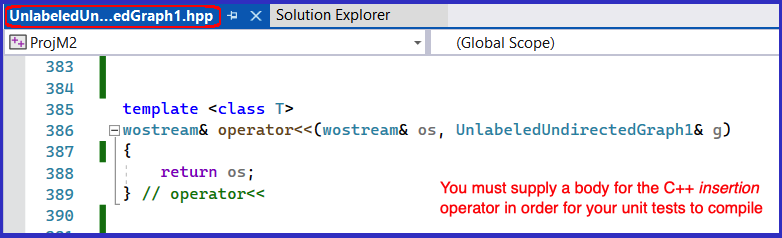
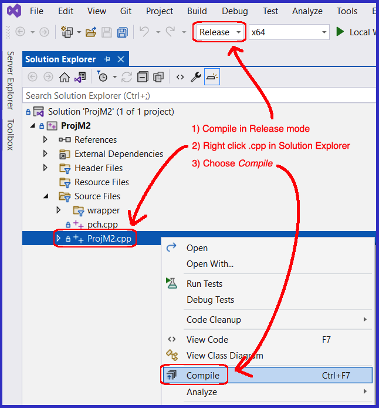

- Create a new VS2022 Unit Test Project, name it ProjM2
- In ProjM2 create at a minimum 1 test case per operation exported by UnlabeledUndirectedGraph1.hpp (excepting the destructor, i.e., no unit test for the destructor)
- Each unit test must follow the Constructing Unit Tests guidelines
- Make sure your ProjM2 compiles in Release Mode
- None of UnlabeledUndirectedGraph1's operations need to be implemented (with one exception) in order for ProjM2.cpp (the unit test file) to compile
- The one exception (see #5 above) is the C++ insertion operator, it has the name operator<<
Give this a body as shown in this screen shot

2. Grading ProjM2
- Your ProjM2 will be compiled against Dr. Holly's private copy of by UnlabeledUndirectedGraph1.hpp
- Your ProjM2 should build so long as you meticulously constructed UnlabeledUndirectedGraph1 from its UML spec (in ProjM1)
3. Submitting the Assignment for Grading
- Follow VS2020 instructions for committing and pushing your completed ProjM2 project to your GitHub Education CSSE373 repo
- Use the commit message "ProjM2, ready for grading"
|
 |